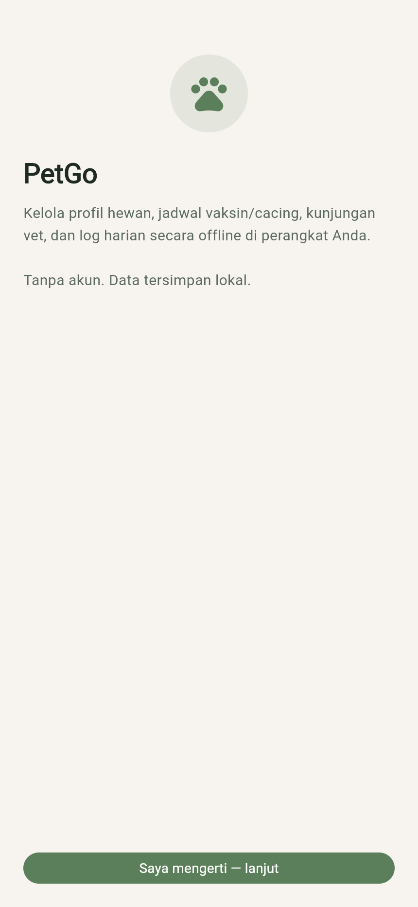
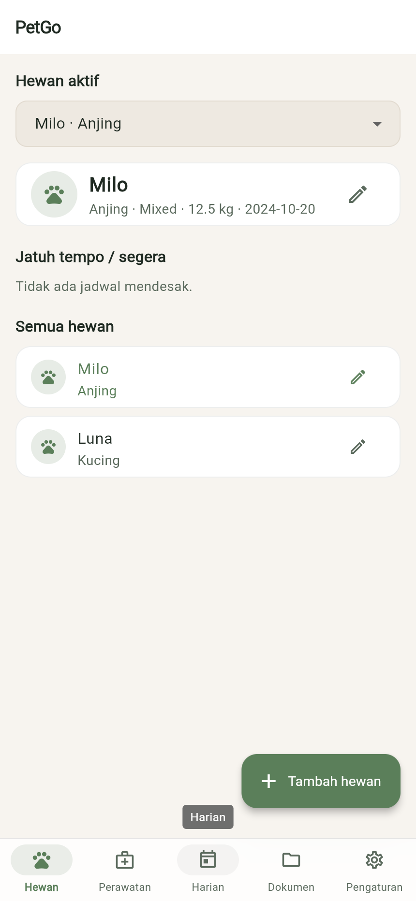
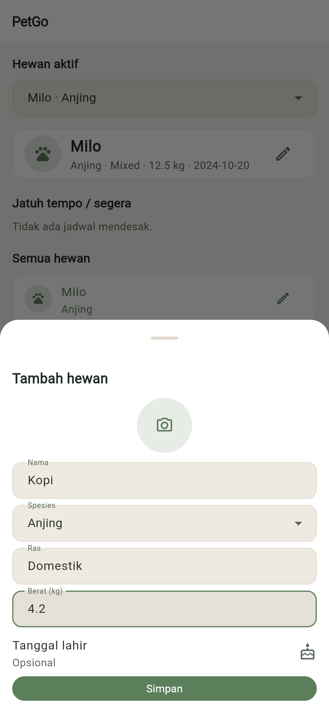
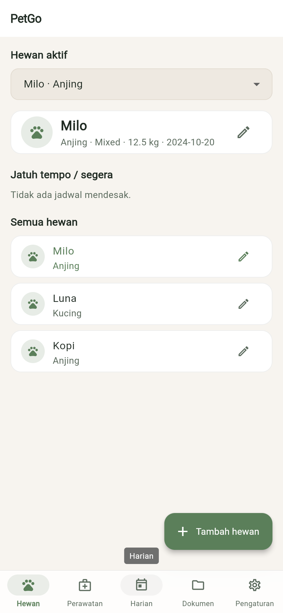

BAST petgo · BAST-FLOW-PET-01
Menambah profil hewan
FLOW-PET-01ROL-001MOD-001EP-001US-001FR-001
Pemilik menyetujui penafian, lalu menambah profil hewan (nama, spesies, ras, berat) dan memilihnya sebagai hewan aktif.
Langkah 1: Baca penafian
Saat pertama dibuka, PetGo menegaskan data tersimpan lokal dan bukan diagnosis dokter hewan. Ketuk Saya mengerti — lanjut.

Langkah 2: Daftar hewan
Tab Hewan menampilkan Hewan aktif, jadwal yang jatuh tempo, dan Semua hewan.

Langkah 3: Isi profil
Ketuk Tambah hewan, isi Nama (2–50 karakter), Spesies, Ras, dan Berat (kg) (0–500).

Langkah 4: Simpan
Ketuk Simpan. Hewan baru muncul di Semua hewan dan bisa dipilih sebagai Hewan aktif.

Hasil uji
| TC | Jenis | Lapis | Skenario | Hasil |
|---|---|---|---|---|
FLOW-PET-01-T01 | positive | unit | hewan pertama tersimpan dan otomatis menjadi hewan aktif | pass |
FLOW-PET-01-T02 | negative | unit | nama satu huruf atau berat di luar 0–500 kg ditolak | pass |
FLOW-PET-01-T03 | edge | unit | batas: nama 50 karakter dan berat 500 kg diterima, 51 karakter ditolak | pass |
FLOW-PET-01-T04 | corner | unit | hapus hewan aktif men-cascade semua catatannya; hewan terakhir diblok | pass |
Direkam terhadap flutter build web (lokal) oleh FLOW-PET-01-T01.